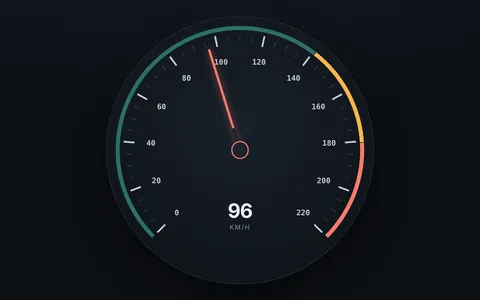
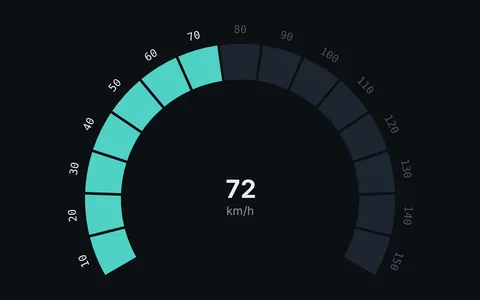
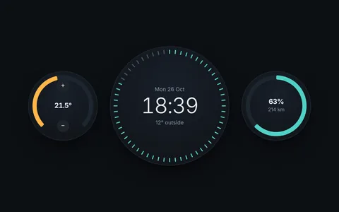

Dashboards
A single headline number, a part of a whole, progress toward a goal: these read best on a circle. Orbit builds gauges, rings and donuts from HTML and CSS, so they take your design tokens, dark mode and transitions like the rest of the page, and you can inspect them in DevTools.
Where it fits
- A design system that needs its own gauge, donut and progress components instead of a chart library's defaults.
- Small pages where a chart library would be most of the JavaScript.
- Values that change: set
valueon an<o-progress>or<o-arc>and it redraws on the next frame.
Where it does not
- Time series and multi-series charts. Use a charting library.
- Thousands of data points. Canvas handles that better than the DOM.
Start from

SpeedometerTicks, zones and a needle on one 270° dial.
240° gaugeA headline KPI on a dial. Stacked progressThree related metrics around one center.
Stacked progressThree related metrics around one center. Donut chartA breakdown with room for a total.
Donut chartA breakdown with room for a total.
Car dashboardA whole panel built from nested systems.
A monitoring view could pair a 240° gauge for CPU with three small rings for memory, disk and network, and a donut for traffic by region. Each one is a .bigbang as big as its card. The Orbit Kit has gauge, donut and rings components ready to use.